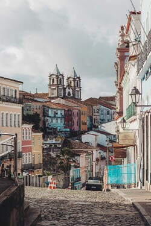

Salvador
What kind of photos are good to encode using JPEG?
PEG is best for photos or images with lots of colors and details, like landscapes or portraits. It's ideal for reducing file size while keeping good quality for complex images.
What kind of photos are good to encode using GIF?
GIF is great for simple images with limited colors, such as logos, icons, or simple animations. It supports transparency and short animations but only uses up to 256 colors
What is unique about the PNG format?
PNG is special because it supports high-quality images with transparency and doesn't lose quality when compresse.
How do you resize your photo to the size it should be displayed?
You can resize your photo by using photo editing software (like Photoshop or GIMP) to adjust its dimensions and resolution. This way, it will display at the intended size without stretching or distortion.
Why should you resize photos using photo editing software instead of resizing it using CSS?
Resizing with photo editing software reduces the file size, improving load times and performance. If you resize using CSS, the browser still loads the full-size image